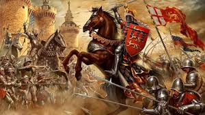
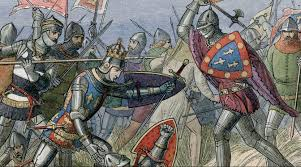
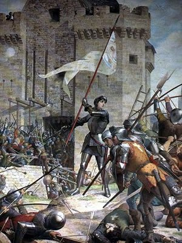
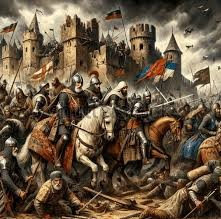

Crise no feudalismo
Nos séculos XI a XV, o feudalismo entrou em crise, marcando a transição da Baixa Idade Média para o surgimento do capitalismo. Diversos fatores contribuíram para essa mudança estrutural, refletindo a complexidade de uma sociedade em transformação.
O feudalismo, baseado na posse de terras (feudos), na monarquia, na centralização do poder, na autossuficiência e em uma sociedade estamental (nobreza, clero e povo) destituída de mobilidade social, permaneceu predominante até o século XIV na Europa. Contudo, a partir do século XI, diversas mudanças históricas, culturais, políticas e sociais iniciaram seu declínio. As principais causas dessa crise incluem:
Êxodo Rural
A busca por melhores condições de vida levou muitos servos a se deslocarem para as cidades, especialmente após conquistarem sua liberdade por meio de pagamento. Esse êxodo rural refletiu a insatisfação com as duras condições de vida nos feudos, onde a exploração e a servidão eram a norma. A urbanização começou a oferecer novas oportunidades de trabalho e um estilo de vida mais dinâmico, o que, por sua vez, reduziu a força de trabalho disponível no campo e desestabilizou o sistema feudal.
Revolução Burguesa
O surgimento da burguesia foi acompanhado por um êxodo rural, à medida que muitos indivíduos deixavam os feudos em busca de melhores condições nas cidades. A introdução de moedas e o desenvolvimento das cidades medievais, juntamente com a intensificação das atividades comerciais, foram fundamentais para o declínio do sistema feudal. A burguesia desejava enriquecer e estabelecer uma nova ordem econômica que refletisse suas ambições o sistema capitalista (Burguesia mercantil). Composta por artesãos, mercadores, banqueiros e proprietários de empresas, a burguesia habitava as antigas cidades medievais fortificadas, conhecidas como burgos. Essa nova dinâmica levou ao declínio do poder da nobreza e do clero, uma vez que se tornava cada vez mais difícil atender às crescentes necessidades da população como alimentação, moradia e saúde. A explosão demográfica resultou na marginalização de muitos, que se encontravam sem emprego e sem terras. A partir do século XV, o renascimento urbano e comercial proporcionou um aumento na estabilidade populacional.
Renascimento do comércio e urbano
O aumento da produtividade gerou um excedente que pôde ser comercializado, impulsionando assim o renascimento do comércio na Europa. Pouco a pouco, essa atividade consolidou-se por meio da formação de feiras, e, à medida que avançava, foram sendo criadas rotas comerciais no norte da Europa e nas regiões mediterrânicas. O renascimento comercial esteve diretamente relacionado com o renascimento urbano. À medida que o comércio desenvolvia-se, comerciantes instalaram-se nos arredores das cidades, inicialmente com feiras temporárias, que, depois, tornaram-se fixas e viraram um anexo das cidades. O comércio na Europa ganhou o incentivo definitivo com o início das Cruzadas no final do século XI. Novos ofícios surgiram e consolidaram-se em corporações de ofício, organizações que reuniam pessoas que praticavam a mesma atividade. Durante a Baixa Idade Média, a Europa experimentou um notável crescimento demográfico, impulsionado por uma série de fatores interligados. Como resultado, ao final do século XIII, a população da Europa Ocidental ultrapassava 50 milhões de pessoas, em comparação com pouco mais de 22 milhões no final da Alta Idade Média. Esse crescimento populacional serviu como incentivo para uma série de transformações significativas no continente.
Cruzadas
O movimento das Cruzadas, que ocorreu entre os séculos XI e XIII, consistiu em uma série de oito expedições de caráter religioso, econômico e militar organizadas pela Igreja. Essas campanhas tiveram um impacto significativo no comércio europeu, marcando o início do renascimento comercial. A abertura de rotas marítimas pelo Mar Mediterrâneo facilitou a comercialização de produtos com o Oriente, o que se tornou um fator determinante para a queda do sistema feudal. O aumento das trocas comerciais não apenas diversificou os bens disponíveis na Europa, mas também promoveu o crescimento de cidades comerciais e a ascensão da burguesia. Embora do ponto de vista religioso as Cruzadas não tenham alcançado todos os seus objetivos, elas foram fundamentais para o desenvolvimento do comércio. As expedições contribuíram para a diminuição da dominação árabe no Mediterrâneo e abriram novos canais de intercâmbio cultural e econômico, que fomentaram a transição de uma sociedade feudal para uma economia mais dinâmica e interconectada.
Peste Negra
A Peste Negra é uma doença causada pelo bacilo "Yersinia pestis", que desencadeou uma pandemia devastadora na segunda metade do século XIV, dizimando cerca de um terço da população da Europa. Este evento se integrou a uma série de crises que marcaram a Baixa Idade Média, incluindo revoltas camponesas, a Guerra dos Cem Anos e o declínio da cavalaria medieval.
A origem da Peste Negra remonta ao continente asiático, especificamente à China. Sua chegada à Europa está relacionada às rotas comerciais que conectavam a Ásia ao continente europeu, com caravanas que chegavam a cidades costeiras como Veneza e Gênova. A transmissão da doença inicialmente ocorria através de ratos e pulgas infectados, que picavam os humanos, levando ao contágio. Com o tempo, a doença começou a se propagar por via aérea, através de espirros e gotículas.
Na época, o desenvolvimento da ciência médica ainda era rudimentar, e as pessoas desconheciam as causas e os métodos de tratamento da peste. A doença recebeu o nome de "negra" devido às manchas escuras que apareciam na pele dos infectados, seguidas de inchaços em áreas com alta concentração de gânglios linfáticos, como virilha e axilas. Esses inchaços eram conhecidos como "bubões", razão pela qual a Peste Negra também é chamada de peste bubônica. A morte decorrente da doença era rápida e dolorosa, geralmente ocorrendo entre dois a cinco dias após a infecção. Esse trágico episódio na história não apenas impactou a população da época, mas também teve profundas consequências sociais e econômicas, alterando o curso da história europeia.
A Guerra dos Cem Anos
Ocorreu entre 1337 e 1453, não foi um conflito contínuo, mas sim uma série de batalhas entre França e Inglaterra, marcando um período crucial na formação das monarquias nacionais europeias. Essa guerra é especialmente lembrada pela participação de Joana d’Arc, uma camponesa que lutou ao lado do exército francês. Ao final do conflito, a França saiu vitoriosa, encerrando as ambições inglesas de anexar seu território.
A origem da Guerra dos Cem Anos remonta à disputa pelo trono francês, que ficou vago após a morte de Carlos IV em 1328. Os ingleses, interessados em aproveitar o vácuo de poder na França, buscavam expandir seu território e usufruir dos benefícios econômicos, especialmente na próspera região de Flandres. O rei inglês Eduardo III, neto do monarca francês Felipe, usou seu grau de parentesco como justificativa para reivindicar a coroa francesa, almejando dominar o comércio em expansão da região, que tinha uma indústria têxtil lucrativa, dependente do comércio de lã com a Inglaterra.
Fim da Guerra dos Cem Anos
|  |  |
|  |  |
Batalha de Poitiers
A Batalha de Poitiers ocorreu em 19 de setembro de 1356 e foi um dos confrontos decisivos da Guerra dos Cem Anos entre a Inglaterra e a França. As forças inglesas, lideradas pelo Príncipe Negro, Eduardo, estavam em menor número, mas conseguiram vencer os franceses, comandados pelo rei João II. Os ingleses, utilizando táticas eficazes de arcos longos, causaram grandes baixas nas fileiras francesas, que eram compostas em grande parte por cavaleiros. A batalha resultou na captura do rei João II, que foi feito prisioneiro e levado para a Inglaterra. Essa vitória consolidou a posição inglesa na guerra e foi um dos momentos que acentuou a crise na França, intensificando as revoltas populares, como as jacqueries. A Batalha de Poitiers, assim, não apenas teve impacto militar, mas também influenciou o cenário político e social da época, destacando a vulnerabilidade da nobreza francesa e a crescente eficácia das táticas militares inglesas.
Revoltas camponesas
Durante a Baixa Idade Média, a estabilidade econômica proporcionada pelas Cruzadas levou a um período de prosperidade. No entanto, a Peste Negra resultou em uma drástica redução da mão de obra, prejudicando a produção agrícola e a demanda alimentar. Para manter seu padrão de vida, os senhores feudais aumentaram impostos e obrigações sobre os camponeses, dificultando sua mobilidade. Nas cidades, os trabalhadores livres também sofreram com a diminuição do mercado, resultando em salários mais baixos.
Essas revoltas na França estão inseridas no tumultuado contexto da Guerra dos Cem Anos. As derrotas nas batalhas contra os ingleses, a prisão do rei João II e o aumento de impostos sobre os camponeses foram fatores que impulsionaram essa mobilização popular. Documentos da época revelam que os revoltosos questionavam a subordinação às autoridades, expressando um descontentamento profundo.
Essas revoltas tiveram um papel crucial na formação de monarquias nacionais na Europa. O desafio que representaram para a nobreza incentivou a criação de grandes exércitos sob a liderança de um monarca, contribuindo para a centralização do poder.
Revolta jacqueries
A Revolta Jacquerie foi uma rebelião popular que ocorreu em 1358 no nordeste da França, em um contexto de crise durante a Guerra dos Cem Anos. O nome "Jacquerie" deriva do desdém com que os nobres se referiam aos camponeses, chamando-os de Jacques ou "Jacques Bonhomme". Esse levante surgiu após a Batalha de Poitiers, em 1356, quando a nobreza francesa passou a ser amplamente desprezada. Os nobres eram acusados de incitar mercenários a atacar os camponeses e de exigir altos impostos, exacerbando a insatisfação popular. A revolta começou nas proximidades de Compiègne e rapidamente se espalhou por várias aldeias, onde os camponeses destruíram castelos e assassinaram nobres. Os revoltosos, liderados por Guillaume Cale, formaram uma aliança com rebeldes parisienses sob o comando de Étienne Marcel. No entanto, as forças jacqueres enfrentaram derrotas significativas. Os parisienses foram derrotados em Meaux por Gaston Phoebus de Foix, enquanto Carlos II de Navarra venceu Cale em Clermont-en-Beauvaisis. Após essas derrotas, os rebeldes foram brutalmente massacrados, encerrando uma das revoltas mais significativas da época e evidenciando a profunda crise social e política que afetava a França.
Centralização política
A centralização política na Baixa Idade Média foi um processo complexo e multifacetado, que resultou em transformações profundas na estrutura política da Europa. Este movimento não apenas contribuiu para a formação dos estados-nação modernos, mas também estabeleceu as bases para o desenvolvimento das instituições políticas que viriam a moldar o futuro da Europa.
Os reis começaram a centralizar a autoridade política em suas mãos, criando estruturas administrativas mais eficientes. A formação de um governo centralizado permitiu uma melhor coleta de impostos, a manutenção da ordem e a defesa do território.
A criação de instituições governamentais, como parlamentos e conselhos, ajudou a formalizar o poder real. Essas instituições frequentemente incluíam representantes de diferentes classes sociais, permitindo um certo grau de participação e legitimação do governo. O desenvolvimento de exércitos profissionais e permanentes, em vez de depender das milícias feudais, proporcionou aos reis um controle mais eficaz sobre o território e uma capacidade de resposta rápida a ameaças internas e externas.
A Queda de Constantinopla
A Queda de Constantinopla, em 1453, marcou o fim do Império Bizantino e o encerramento da Idade Média, inaugurando a Idade Moderna. Este evento foi resultado da expansão do Império Otomano sob o comando de Mehmed II, que se aproveitou do enfraquecimento político e econômico dos bizantinos. Entre as causas desse acontecimento, destacam-se a superioridade militar otomana, com inovações em artilharia, e a falta de apoio europeu à cidade, que estava isolada e dividida internamente.
Constantinopla, estrategicamente situada entre o Mar Mediterrâneo e o Mar Negro, era protegida por imponentes muralhas que resistiram até o cerco de 1453. Após 50 dias de intensos bombardeios, os otomanos invadiram a cidade em 29 de maio, resultando na morte do imperador Constantino XI e no controle otomano sobre a região. Fundada pelo imperador romano Constantino em 330 d.C., a cidade foi a capital do Império Romano do Oriente, que mais tarde se tornaria o Império Bizantino, resistindo a inúmeras ameaças ao longo de mais de mil anos.
No entanto, no século XV, o Império Bizantino estava em declínio, enfraquecido por guerras constantes contra os turcos otomanos e outras potências europeias. Esse desgaste econômico e político tornava a cidade vulnerável. O Império Otomano, por sua vez, estava em ascensão e, sob a liderança de Mehmed II, tinha como objetivo capturar Constantinopla e torná-la a capital de seu império.
A Queda de Constantinopla é considerada um marco que simboliza o fim da Idade Média, alterando profundamente a geopolítica e a economia da Europa e do Oriente Médio. A superioridade militar dos otomanos foi um fator crucial; Mehmed II trouxe uma vasta artilharia, incluindo canhões capazes de destruir as muralhas da cidade, algo que invasores anteriores não haviam conseguido fazer. Além disso, as divisões internas no Império Bizantino, somadas à falta de apoio das potências ocidentais, comprometeram sua defesa.
A cidade era cercada por três lados por água: o Corno de Ouro ao norte, o Mar de Mármara ao sul e o estreito de Bósforo a leste. Suas muralhas, construídas por Teodósio II no século V, eram uma das maiores fortificações da época. No entanto, o isolamento crescente e a superioridade naval e terrestre dos otomanos diminuíram essa vantagem estratégica.
O cerco a Constantinopla começou em 6 de abril de 1453, quando Mehmed II lançou um exército de aproximadamente 80 a 100 mil soldados contra a cidade, que contava com cerca de 7 mil defensores sob o comando de Constantino XI. Durante o cerco, os otomanos bombardearam incessantemente as muralhas e bloquearam as rotas marítimas, impossibilitando qualquer auxílio externo. Após semanas de resistência, as muralhas finalmente foram rompidas.
Em 29 de maio, as tropas otomanas realizaram um ataque final, invadindo a cidade por diversas frentes. Constantino XI, segundo relatos, lutou bravamente até a morte, recusando-se a fugir. Após a conquista, Mehmed II permitiu que seus soldados saqueassem a cidade por três dias, resultando em devastação e na morte ou escravização de muitos habitantes.
As consequências da Queda de Constantinopla foram profundas. Politicamente, marcou o fim do Império Bizantino, que durou mais de mil anos, e consolidou o Império Otomano como uma das principais potências da época. Constantinopla foi renomeada como Istambul e se tornou a capital do Império Otomano, transformando-se em um centro de cultura, religião e comércio.
Economicamente, a queda interrompeu as rotas comerciais entre a Europa e o Oriente, levando os europeus a buscar novas rotas marítimas. Isso incentivou as Grandes Navegações e contribuiu para a descoberta do continente americano. Culturalmente, o êxodo de intelectuais bizantinos para o Ocidente, especialmente para a Itália, trouxe consigo textos antigos e conhecimentos que impulsionaram o Renascimento, um movimento cultural que transformou a Europa nos séculos seguintes. Assim, a Queda de Constantinopla não apenas simbolizou o fim da Idade Média, mas também pavimentou o caminho para novas eras de exploração e inovação.